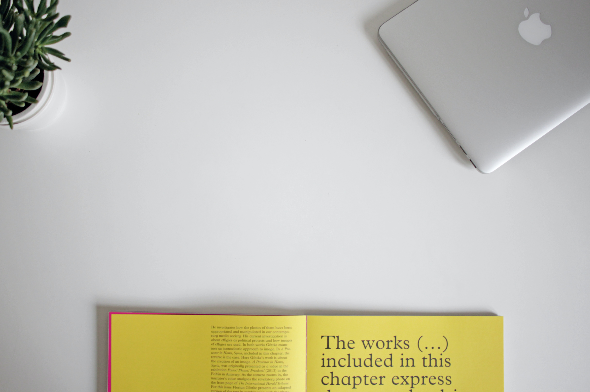

<dressCoding>
- HELLO! WELCOME TO MY JOURNEY OF BECOMING A WEB DEVELOPER. I HAVE A BACKGROUND IN FASHION DESIGN SO HERE YOU'LL FIND A LOT OF CODE ANALOGIES TO SEWING.
TECH BLOG
- MY NOTES
- Here you will find all my notes I've written while learning HTML, CSS, JavaScript and everything else you need to become a web developer. There's lots of analogies to sewing process so if you have some experience in creating clothes you might find it handy. It works other way round too in case if you're a web dev who want's to learn how to sew.

CORE BLOG
- MY THOUG
- Here you will find all my notes I've written while learning HTML, CSS, JavaScript and everything else you need to become a web developer. There's lots of analogies to sewing process so if you have some experience in creating clothes you might find it handy. It works other way round too in case if you're a web dev who want's to learn how to sew.
- 